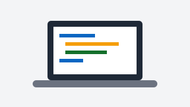

Disciplinele din acest semestru
- Tehnologii Web (TW)
- Securitatea Sistemelor Informatice (SSI)
- Ingineria Asistată de Calculator (IAC)
- Baze de Date Distribuite (BDD)
- Design Industrial (DI)
- Sisteme de Proiectare Asistată (SAP)
Imagini Ilustrative

Orar Semestrul Curent
| Ora | Luni | Marți | Miercuri | Joi | Vineri |
|---|---|---|---|---|---|
| 08:00 - 10:00 | Laborator SSI (PII6) | - | - | - | - |
| 10:00 - 12:00 | Laborator TW (PII6) | - | - | - | Curs SAP (PI2) |
| 12:00 - 14:00 | Curs IAC (PII2) | - | - | - | Seminar SAP (PII1) |
| 14:00 - 16:00 | Curs TW (PII1) | - | Curs DI (TI6) | - | Laborator SAP (PII3) |
| 16:00 - 18:00 | - | Curs SSI (PIII2) | Laborator DI (TI6) | - | - |
| 18:00 - 20:00 | - | Curs BDD (PIII2) | Laborator BDD (PII7) | - | - |
Link-uri Utile
Puteți consulta orarul oficial pe site-ul universității: Orar UniTBv